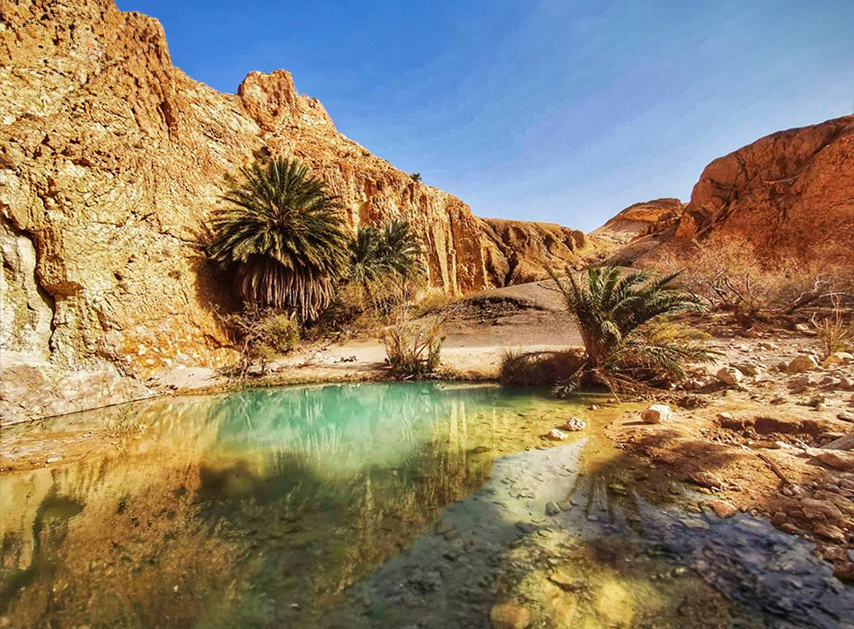
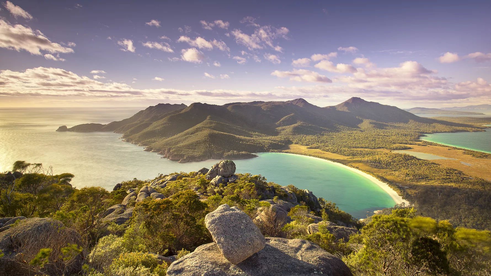
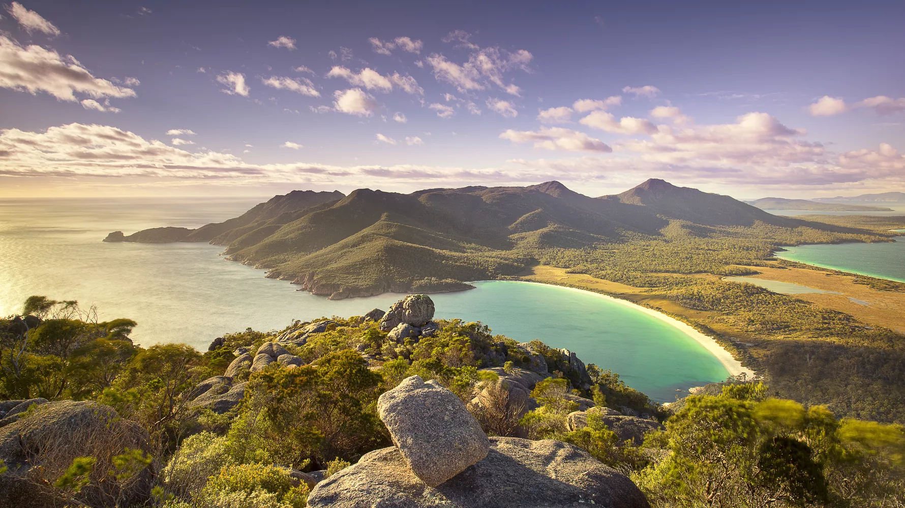

Our travellers favourite destinations
- Douz, Tunisia: Douz, often called the "Gateway to the Sahara," is a small town in southern Tunisia known for its deep connection to the desert and its traditional Berber culture. Located at the edge of the Sahara, Douz is a hub for desert tourism, where vast expanses of golden dunes stretch out in every direction. The town's unique charm lies in its blend of modern life and ancient traditions, with local markets selling traditional crafts, and annual festivals like the International Festival of the Sahara celebrating the region's nomadic heritage with camel races, folk music, and dance. Visitors to Douz can experience the stark beauty of the desert through activities like camel trekking, quad biking, and star gazing, making it a key destination for those seeking to explore the mesmerizing landscapes and rich cultural history of the Sahara.
- Bay of Kotor, Montenegro: The Bay of Kotor, or Boka Kotorska, is a breathtaking fjord-like bay in southwestern Montenegro along the Adriatic Sea, renowned for its stunning natural beauty where steep, rugged mountains plunge into crystal-clear waters. This intricate series of interconnected bays forms one of Europe's most beautiful natural harbors, lined with charming medieval towns like Kotor, a UNESCO World Heritage Site known for its fortified walls and historic landmarks, and Perast, famous for its baroque palaces and the island church, Our Lady of the Rocks. Rich in history, culture, and serene landscapes, the Bay of Kotor is a captivating destination offering a unique blend of ancient heritage and tranquil beauty.
- Tasmania, Australia: Tasmania, an island state off the southern coast of Australia, is renowned for its unspoiled wilderness, rugged landscapes, and unique wildlife. Often described as a natural paradise, Tasmania boasts a diverse range of environments, from ancient rainforests and towering mountain ranges to pristine beaches and expansive highland plateaus. The island is home to several national parks and reserves, including the famous Cradle Mountain-Lake St Clair National Park, part of the Tasmanian Wilderness World Heritage Area. Tasmania’s isolation has allowed for the preservation of many endemic species, such as the Tasmanian devil. Beyond its natural beauty, Tasmania also offers rich cultural experiences, with historic towns like Hobart and Launceston showcasing colonial architecture, vibrant arts scenes, and a growing reputation for fine food and wine. Whether exploring its wild landscapes or enjoying its cultural offerings, Tasmania provides a unique blend of adventure and tranquility.
.

 
